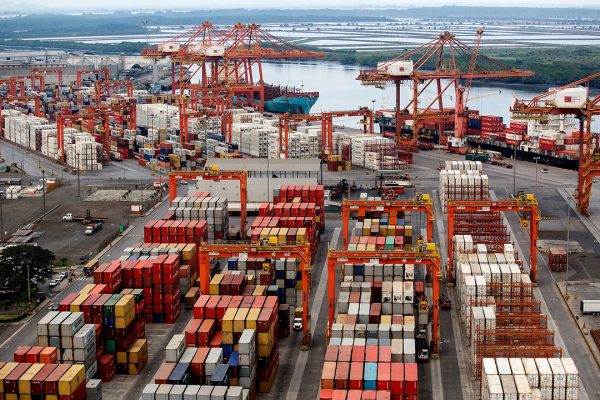
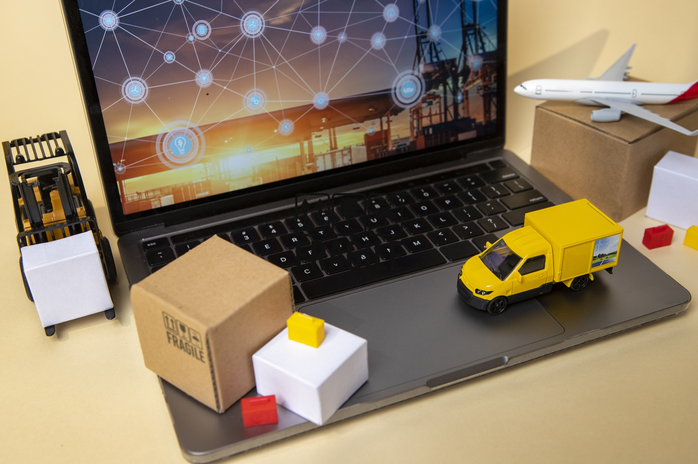

Tema 1: Fundamentos de las Operaciones Portuarias
Los fundamentos de las operaciones portuarias son esenciales para comprender cómo se organiza y gestiona el comercio marítimo a nivel global.
1.1 ¿Qué es una operación portuaria?
Una operación portuaria comprende actividades como la carga y descarga de buques, el almacenamiento de mercancías, el control documental, y la interacción con aduanas y agentes logísticos. Estas tareas permiten conectar eficientemente los modos de transporte marítimo, terrestre, ferroviario y aéreo.

1.2 Importancia de los Puertos
Los puertos son los pulmones logísticos del comercio internacional. Actúan como puntos de enlace para el tránsito de mercancías entre continentes. Además, generan empleo y desarrollo económico para las regiones donde se ubican.
Sus principales funciones incluyen: recepción de buques, almacenamiento temporal, despacho aduanero, y conexión con rutas terrestres y ferroviarias.

1.3 Clasificación de los Puertos
Los puertos pueden clasificarse según su ubicación y función. Por ejemplo, un puerto marítimo se encuentra en la costa, mientras que un puerto seco está ubicado en el interior del país pero conectado logísticamente a uno marítimo.
| Tipo | Ubicación | Ejemplo |
|---|---|---|
| Marítimo | Costa | Puerto de Guayaquil |
| Fluvial | Río | Puerto de Manaos |
| Seco | Interior | Aeropuerto de Quito |
1.4 Puertos y Conectividad Internacional
Un puerto bien conectado tiene acceso a redes internacionales (foreland) y a zonas industriales interiores (hinterland). Esta conectividad es vital para el comercio exterior y el desarrollo logístico.
Tema 2: Infraestructura y Zonas Operativas
La infraestructura portuaria es clave para la eficiencia de las operaciones. Cada tipo de puerto necesita estructuras y tecnologías específicas.
2.1 Infraestructura Portuaria
Incluye muelles, canales dragados, terminales de contenedores y graneles, patios de almacenamiento, y accesos terrestres. Todo esto permite operar buques de gran tamaño y manejar grandes volúmenes de carga.

2.2 Equipamiento y Tecnología
Los puertos modernos utilizan grúas STS, montacargas, vehículos automatizados (AGVs) y escáneres de seguridad para acelerar y asegurar el movimiento de mercancías.
2.3 Conexiones Intermodales
La conexión entre modos de transporte (carretera, ferrocarril, marítimo, aéreo) permite que la carga llegue de manera eficiente al destino final. La infraestructura intermodal es vital en la cadena logística moderna.

Tema 3: Gestión Documental, Contractual y Aduanera
3.1 Flujo documental
Documentos clave como el Bill of Lading, la carta porte y la guía aérea son esenciales para el comercio internacional.

3.2 Procesos aduaneros
Incluyen clasificación arancelaria, declaración aduanera, inspección documental y física para el control de mercancías.
3.3 Contratación y relaciones comerciales
Contratos como Incoterms, fletamento y logística regulan responsabilidades y costos entre las partes involucradas.
3.4 Digitalización documental
Plataformas como la VUCE, tecnologías como Blockchain y documentos electrónicos modernizan y agilizan los procesos portuarios.

Referencias bibliográficas
- Cámara de Comercio Internacional (CCI). (2020). Incoterms 2020: Reglas oficiales para la interpretación de términos comerciales. CCI.
- CEPAL. (2022). Logística y Puertos en América Latina y el Caribe. Comisión Económica para América Latina y el Caribe. https://www.cepal.org/es/temas/transporte
- Diario del exportador. (2014, 2 noviembre). Carta porte para el transporte terrestre. https://www.diariodelexportador.com/2014/11/carta-porte-para-el-transporte_2.html
- Ferrer, V. (2021, 23 febrero). Bill of lading. https://vicentferrer.com/bill-of-lading/
- ICS (International Chamber of Shipping). (2021). Shipping and the Environment: Ports and Sustainability.
- Ministerio de Producción, Comercio Exterior, Inversiones y Pesca del Ecuador. (2023). Sistema VUCE Ecuador. https://www.vuce.gob.ec/
- Notteboom, T., & Rodrigue, P. (2021). Port Economics, Management and Policy. Routledge.
- Organización Mundial de Aduanas (OMA). (2022). Manual sobre Clasificación Arancelaria y Facilitación del Comercio. https://www.wcoomd.org/
- UNCTAD. (2023). Review of Maritime Transport 2023. https://unctad.org/publication/review-maritime-transport-2023
- World Bank. (2020). Port Reform Toolkit. https://ppiaf.org/documents/2089/download